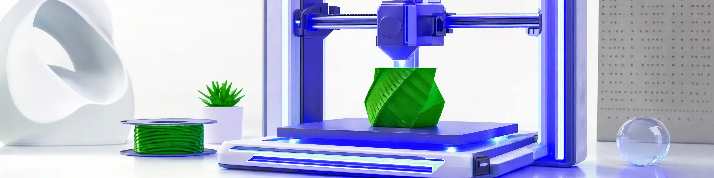

Guides for better 3D prints
Short, practical reads — no fluff, no filler. Model preparation, the software stack explained, and a first-week plan that ends with objects you actually keep. Every guide links straight back to the model collections you can practice on.
20 guidesupdated 2026-09-043D Printed Christmas Gifts People Actually Keep
The best printed gifts share three properties: they finish in one evening, they surviv…
Read the guide3D Printing Software, Explained: Modeling, Repair and Slicing
The software side of 3D printing looks like a wall of acronyms, but it colla…
Bed Adhesion: Fixing the First Layer for Good
When a print fails at minute three, the diagnosis is almost always the same:…
Desk Setup Upgrades You Can Print This Week
A desk is a grid of small problems: the phone lying flat, the pens migrating…
Easter Crafts to Print With Kids
Easter is the easiest holiday to turn into a printing craft session, because…
FDM vs Resin: Which Printer Should Come First?
Two technologies, one decision. FDM melts plastic filament; resin cures liqu…
Halloween Props You Can Print This Weekend
Great Halloween printing is about restraint: one or two well-made pieces bea…
How to Paint 3D Prints So They Stop Looking Printed
Fifteen minutes of finishing separates "3D printed object" from "thing I bou…
How to Prepare a 3D Model for Printing: A Step-by-Step Checklist
Most failed prints are not slicer problems — they are model problems that on…
How to Store Filament So It Never Ruins a Print
Damp filament is the ghost in the machine: it causes stringy prints, popping…
Multicolor Printing Without an AMS
Multi-material units are lovely and optional. A single-extruder printer can…
PLA, PETG or ABS: A No-Drama Filament Guide
Three spools dominate every filament shelf, and choosing wrong costs more in…
Print-in-Place, Explained: Why Articulated Toys Need No Assembly
Print-in-place is the party trick of 3D printing: a jointed dragon comes off…
Print Speed vs Quality: When Fast Is Actually Fine
Speed is the most misunderstood dial in 3D printing. Faster is not worse and…
Safe 3D Printing at Home: Ventilation, Hotends and LEDs
Consumer 3D printing is a home-safe hobby with three honest hazards: fumes,…
The Only Slicer Settings That Really Matter
Slicers expose two hundred settings so that you can safely ignore one hundre…
Stringing and Warping: A Practical Troubleshooting Guide
Two failure modes cause most ugly prints, and each has a surprisingly short…
Supports: When You Need Them and How to Make Them Disappear
Supports are not a default — they are a decision. Print them when the geomet…
Valentine's Gifts Worth Printing
Printed gifts win on one axis that stores cannot touch: specificity. A rose…
Your First Week of 3D Printing: A Practical Plan
The first week decides whether a printer becomes a hobby or a coat rack. Thi…
Put it into practice
Each collection pairs naturally with the guides above.
